sector80 supernovae (29 total)
Each figure has three panels. The top panel shows the transient light curve, the middle panel shows the local background (estimated in an annulus), and the bottom panel shows a "background-model corrected" light curve. Details about the background model are in the README.
The vertical red line marks the time of discovery reported to TNS. Other useful metadata from TNS is in the figure title.
Note that the top and bottom panel are in magnitudes, while the middle panel is in differential flux units. The magnitudes are calibrated to the flux in the reference image used for image subtraction. Thus, flux from the host galaxy is included in these magnitudes.
3-sigma upper limits are plotted as triangles with no errorbars. A typical limiting magnitude is 19.6 in 30 minutes or 18.4 in 200 seconds (for low backgrounds).
The links allow you to download the light curve data as a text file.
More details in the README.
2024nny
 2024rjt
2024rjt
 2024nak
2024nak
 2024ozx
2024ozx
 2024lty
2024lty
 2024ljc
2024ljc
 2024pul
2024pul
 2024pjp
2024pjp
 2024mbc
2024mbc
 2024pcq
2024pcq
 2024pjo
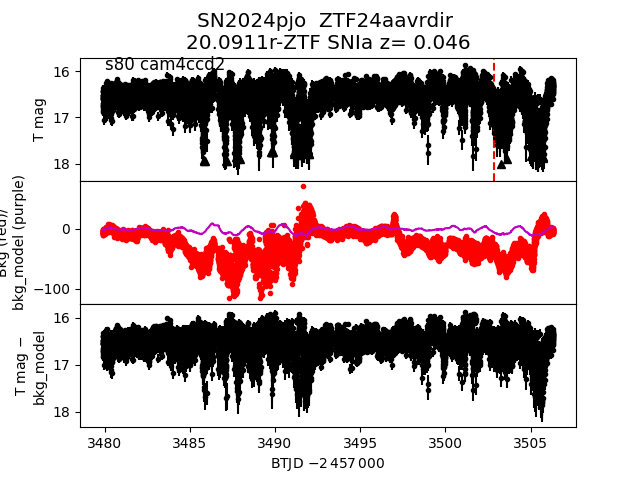
2024sdn
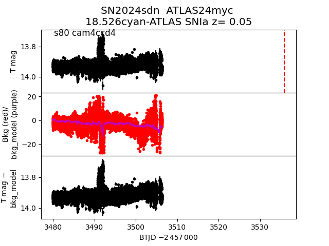
2024ngr
2024pjo
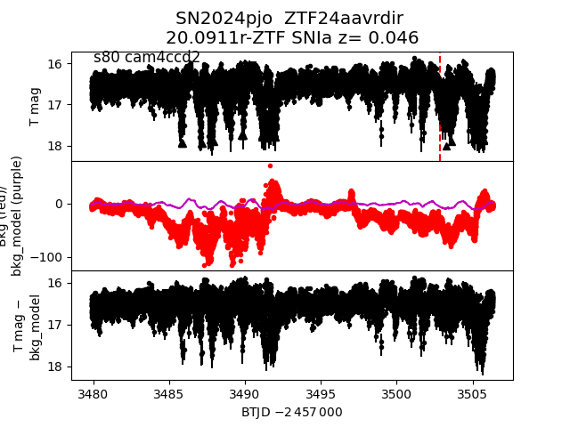
2024sdn
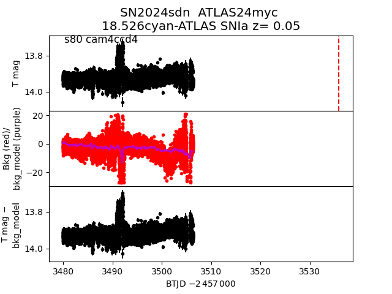
2024ngr
 2024qny
2024qny
 2024rnu
2024rnu
 2024sbt
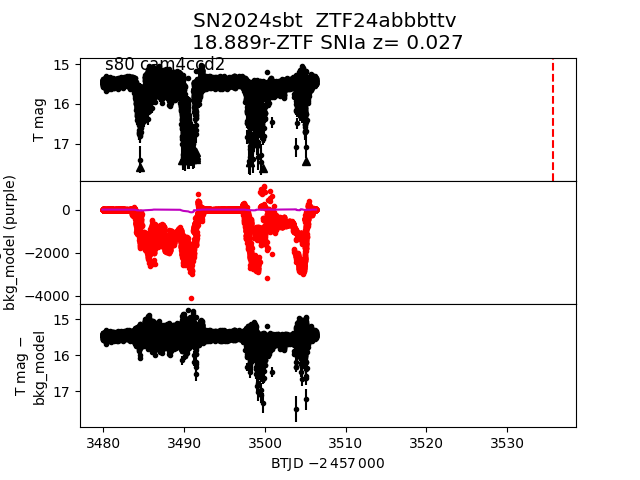
2024pvw
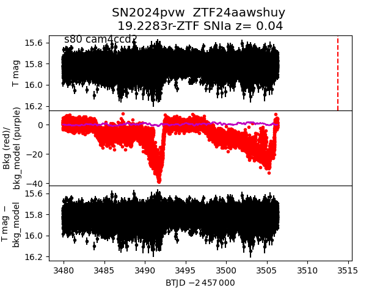
2024qrc
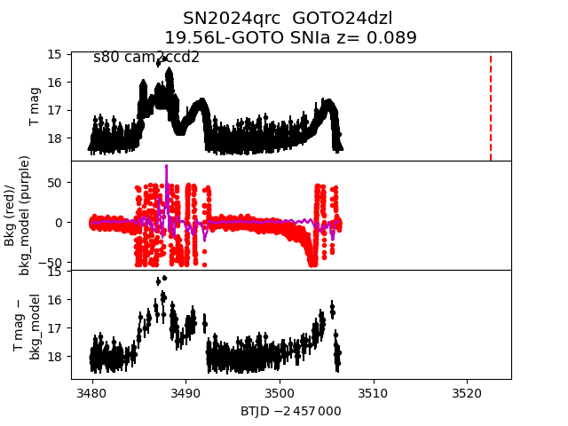
2024ppj
2024sbt
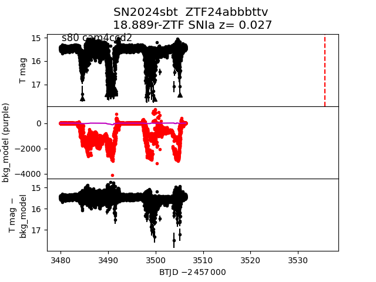
2024pvw
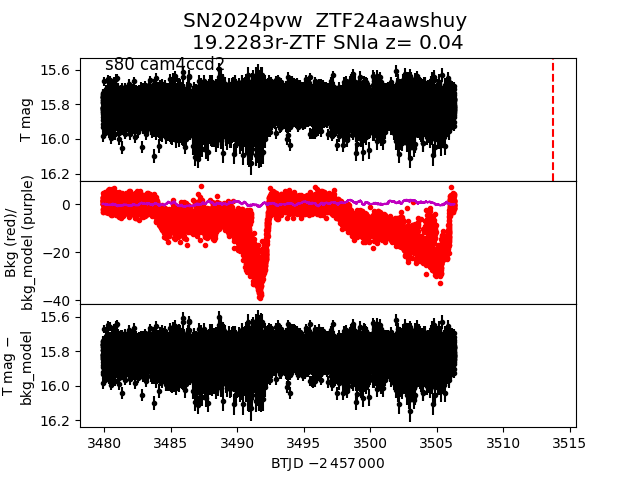
2024qrc
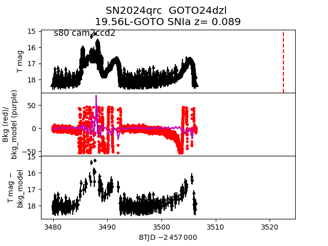
2024ppj
 2024pmm
2024pmm
 2024qal
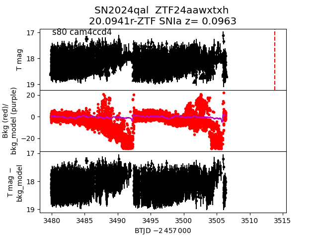
2024qai
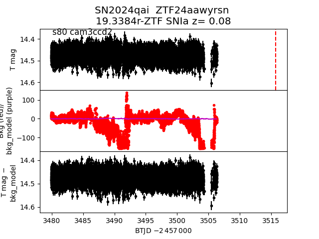
2024psr
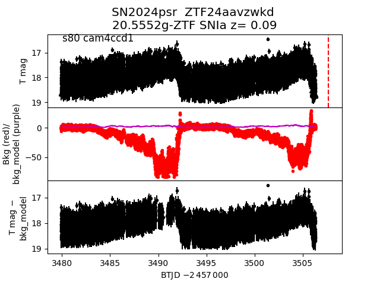
2024qha
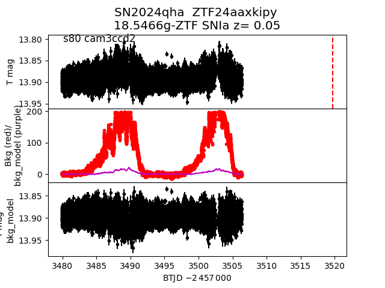
2024qyv
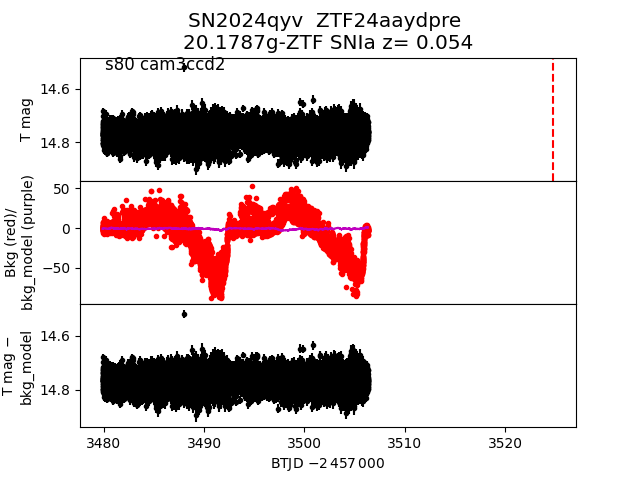
2024nek
2024qal
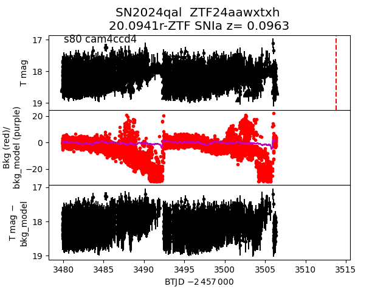
2024qai
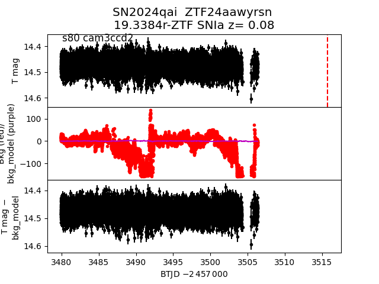
2024psr
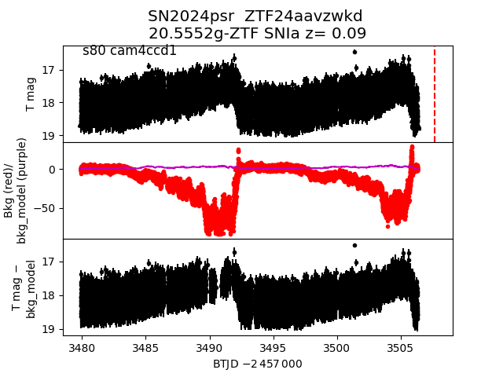
2024qha
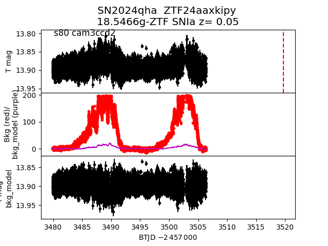
2024qyv
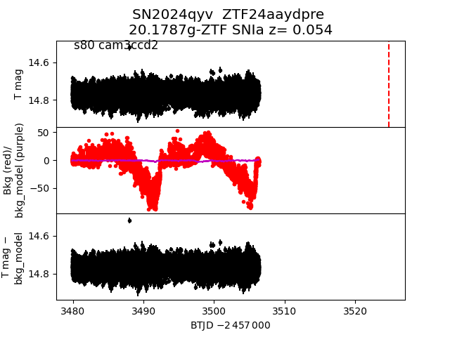
2024nek
 2024rmv
2024rmv
 2024myl
2024myl
 2024mlc
2024mlc